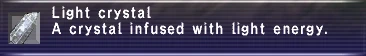

StatisticsLight crystal |
Other Uses
|
How to Obtain
Dropped From
- All monsters that are Easy Prey or higher and marked as dropping a Light Crystal. Must have Signet or Sanction active.
- Drops from these monster families:
- Cardians ("of Coins" only)
- Golems
- Hippogryphs
- Magic Pots
- Mimics
- Rocs
- Tonberries
Special
- Light Cluster - Using a light cluster will shatter it into 12 light crystals.
- Aurora Crystal - A High Quality Crystal that can be used to add the crafter's "signature" to the item being made.
Gardening
- Confirmed on Eden.
Pot Seed Crystal Yield Brass Flowerpot Grain Seeds Dark Crystal 8-11 Herb Seeds Dark Crystal 8-11 Vegetable Seeds Dark Crystal 8-10 Wildgrass Seeds Dark Crystal 6-11
Pot Seed Crystal Yield Ceramic Flowerpot Grain Seeds Dark Crystal 8-11 Herb Seeds Dark Crystal 8-11 Vegetable Seeds Dark Crystal 8-10 Wildgrass Seeds Dark Crystal 6-11
Pot Seed Crystal Yield Earthen Flowerpot Grain Seeds Dark Crystal 8-11 Herb Seeds Dark Crystal 8-11 Vegetable Seeds Dark Crystal 8-10 Wildgrass Seeds Dark Crystal 6-11
Pot Seed Crystal 1 Crystal 2 Yield Brass Flowerpot Tree Cuttings No Crystal Dark Crystal 23
Pot Seed Crystal 1 Crystal 2 Yield Ceramic Flowerpot Tree Cuttings No Crystal Dark Crystal 23
Pot Seed Crystal 1 Crystal 2 Yield Earthen Flowerpot Tree Cuttings No Crystal Dark Crystal 23
- Uncomfirmed on Eden.
Chocobo Digging
Zone Abundance Carpenters' Landing ● Common Jugner Forest ● Common Konschtat Highlands ● Common North Gustaberg ● Uncommon South Gustaberg ● Uncommon Pashhow Marshlands ● Uncommon East Ronfaure ● Uncommon West Ronfaure ● Uncommon East Sarutabaruta ● Uncommon ● = Obtained with Burrow
Adapted from Eden Wiki: Light Crystal · Contributors and history · CC BY-SA 4.0. Revision 44773. Layout, links and optional background text adapted for Zenith.
Zenith market and additional sources
Auction House
Category: Crystals
| Listing | Buy from Zenith stock | Automatic buyer limit |
|---|---|---|
| Single | 320 gil | 80 gil |
| Stack of 12 | 3,840 gil | 960 gil |
These are the market package’s reference prices. Check the Auction House’s current stock before bidding. A higher bid spends the higher amount.
When active, the market aims to keep 6 single listings and 2 stacks. This is a restocking target, not a live stock count.
Price History and stock
At an Auction House counter, find the item in the category above, choose Single or Stack, then open Price History. The two histories are separate. History lists up to ten completed sales, with the amount paid, date, seller and buyer.
The available quantity is shown in the Auction House listing. An empty history means there are no recorded completed sales for that item and listing type; it does not mean the item costs zero. This website does not have a live connection to your local Auction House.
Buying, selling and market limits
Sources
Item and Auction House category data
Native sources match the server baseline used for Zenith’s packages. Custom rewards follow their linked quest guides.